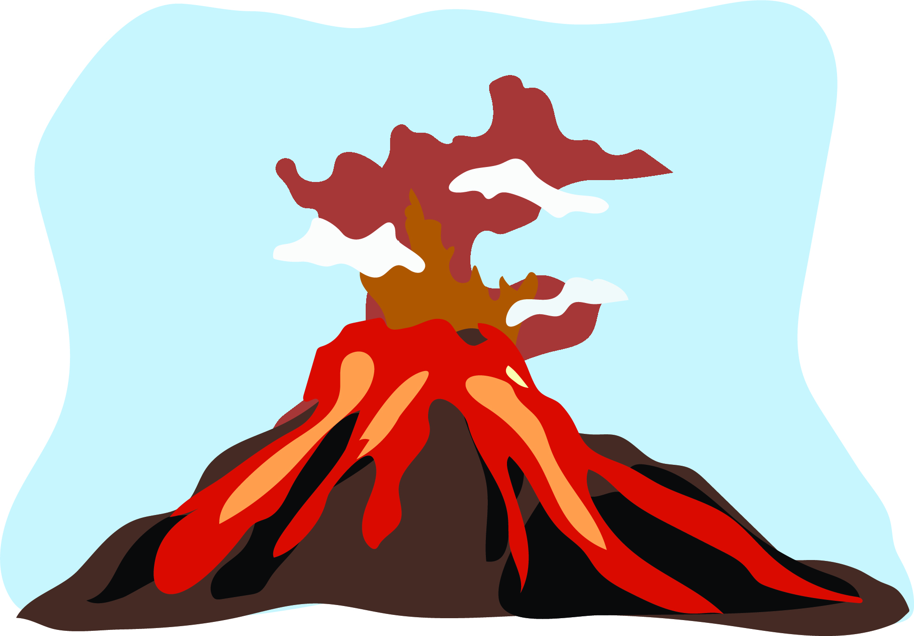
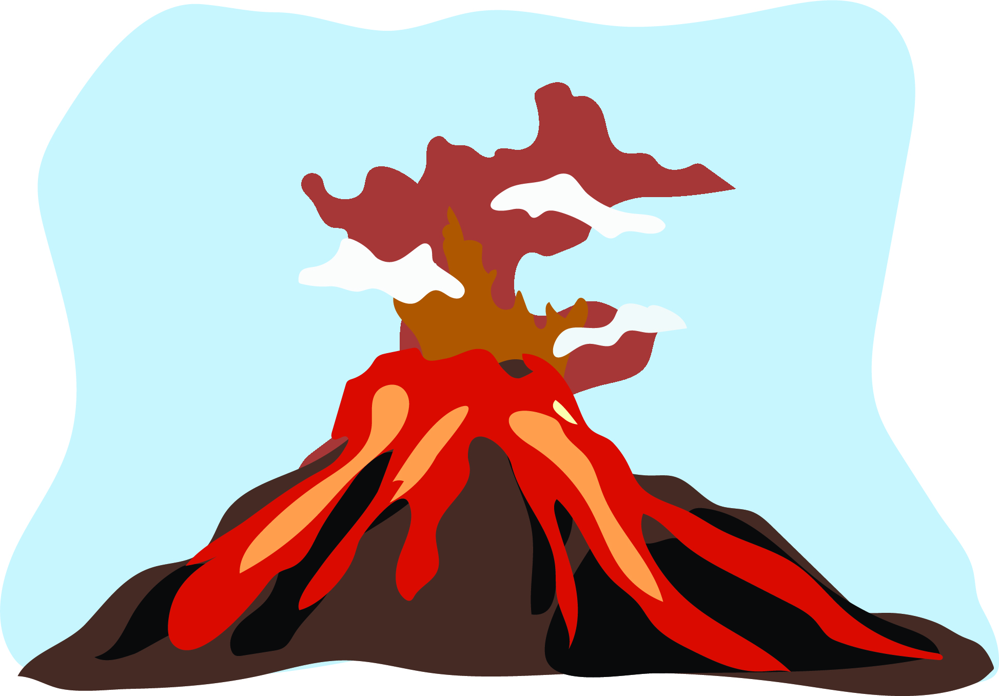

Huang Fellows Summer 2020
Science Kits for 4th Graders
I worked with a team to create an Earth History lesson plan for 4th grade students. Here are some of the illustrationsthat came out of the project.
 



SlothStats.com
Concept Art
Developed concept art for an upcoming website, slothstats.com

Icons
Various fruits
In the progress of developing some icon sets, here covering oranges, apples, blueberries, strawberries, and cherries.